按每张立绘的眼睛位置统一取景：头顶都在规则提示条下方约 14 像素，不顶到 UI，也不靠下。每位守关者身后有按元素着色的旋转符文法阵，巴尔德温是琥珀金。
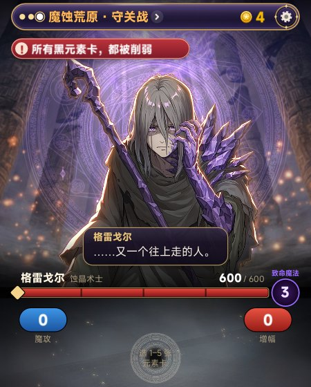
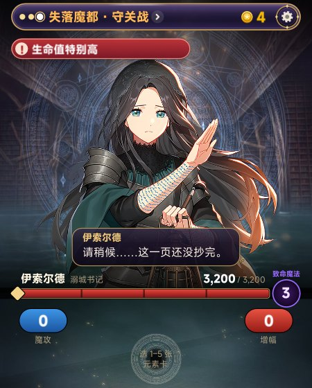
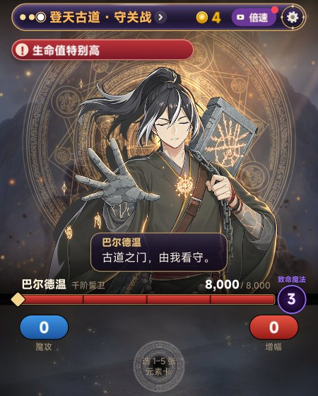
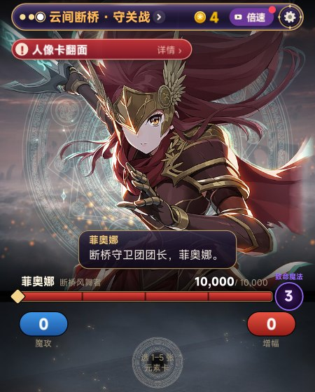
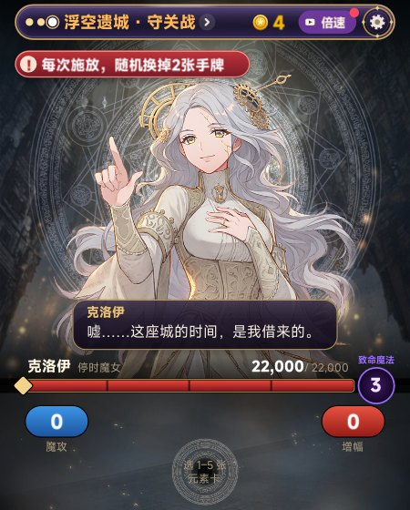
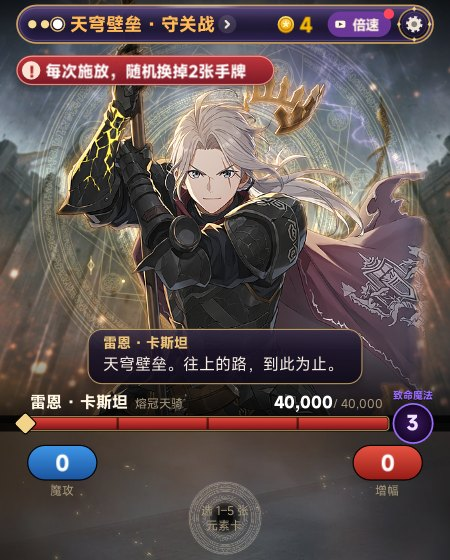
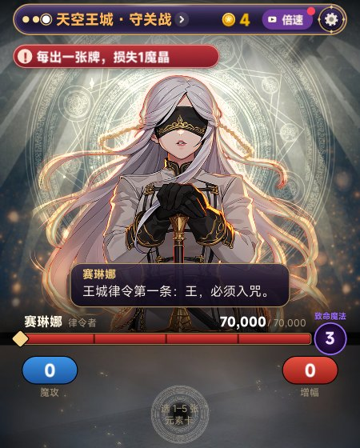
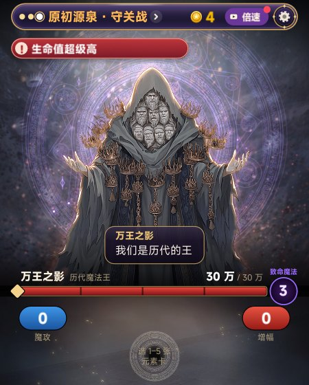
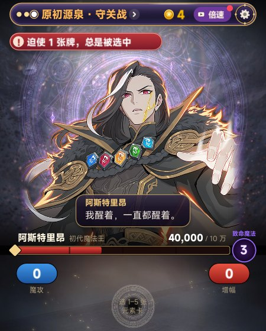
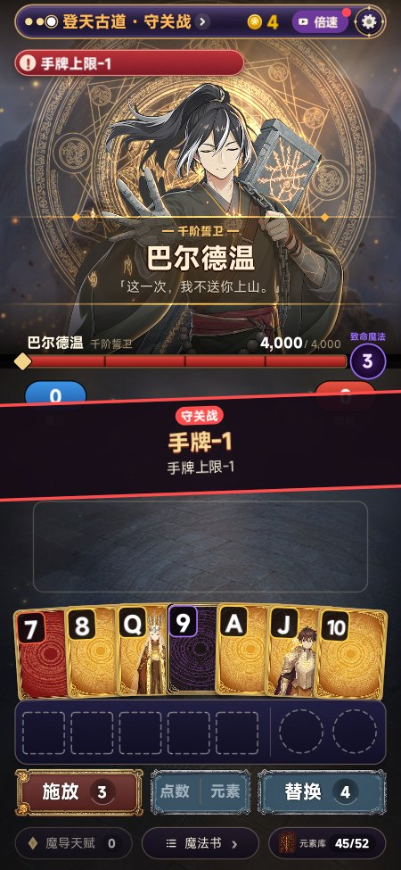
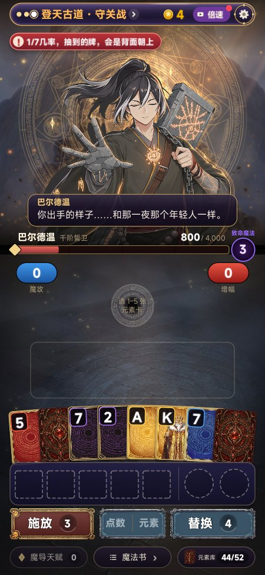
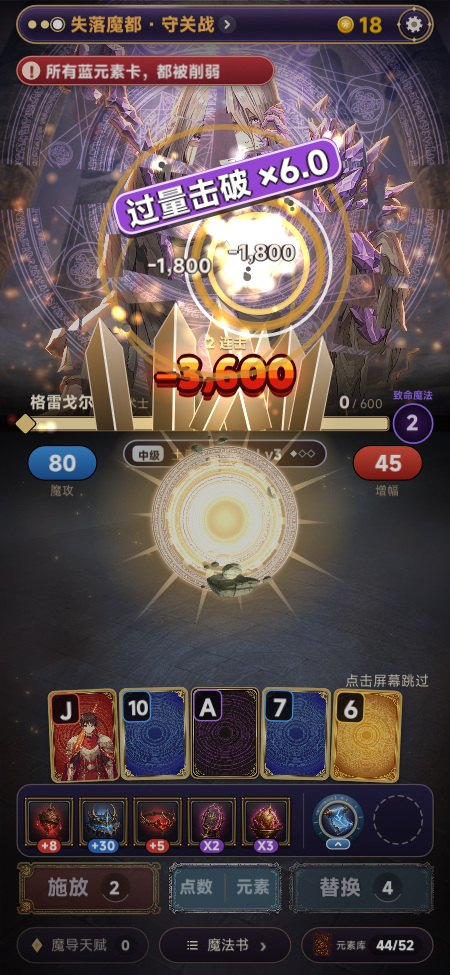
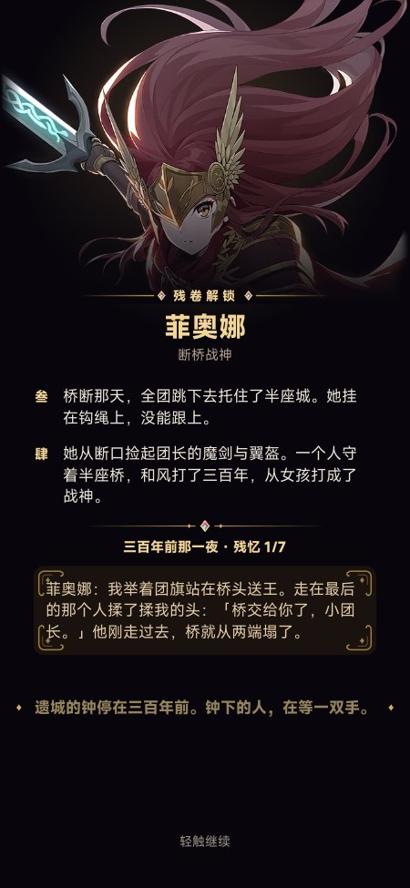
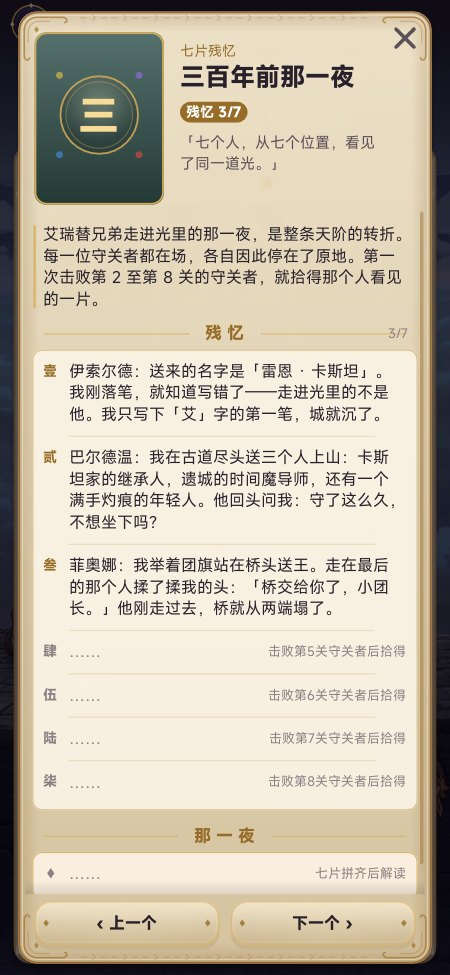
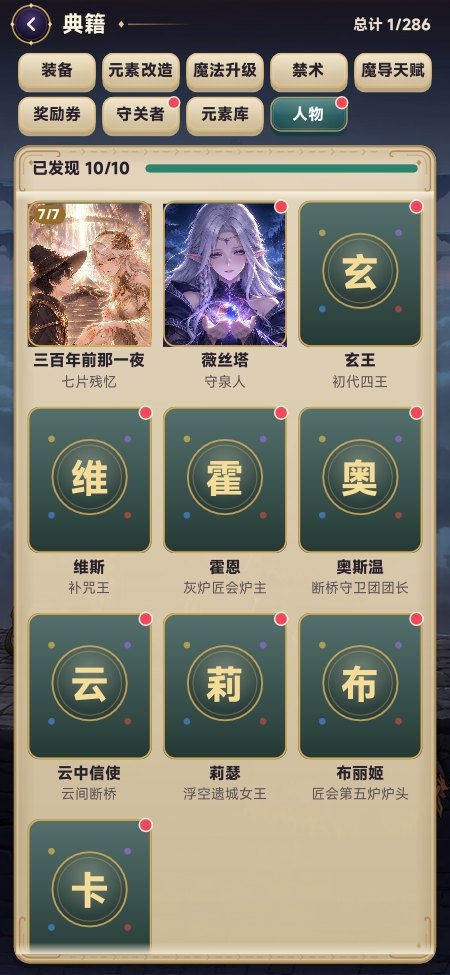
| 格雷戈尔 | 「回去吧。再往上，你会变成我。」 |
| 伊索尔德 | 「名字还在，城就不会沉。」 |
| 巴尔德温 | 「这一次，我不送你上山。」 |
| 菲奥娜 | 「桥交给我了。谁也别想过。」 |
| 克洛伊 | 「我的时间，只为那双手停。」 |
| 雷恩 | 「往上的路，到此为止。」 |
| 赛琳娜 | 「王，必须入咒。我不看。」 |
| 万王之影 | 「你也会成为我们。」 |
| 阿斯特里昂 | 「我教的手，撑得起世界吗？」 |